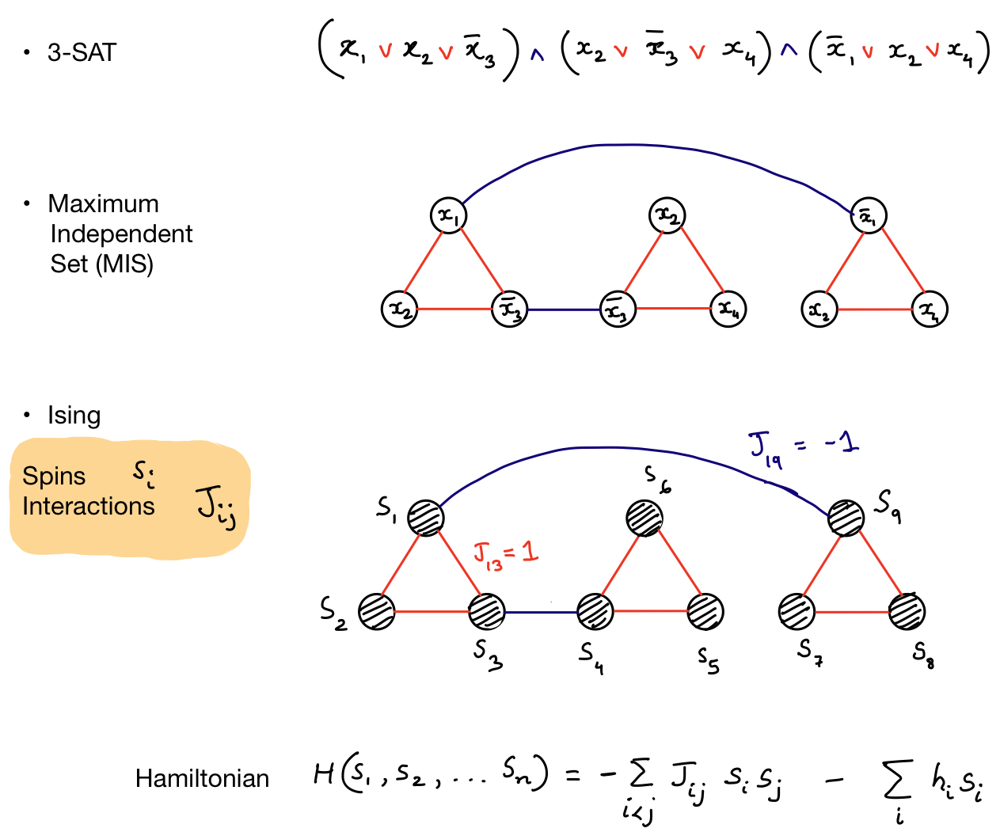

Ising formulations
The Ising formulation of "nondeterministic polynomial-time" (NP)-complete and NP-hard problems allows physics-based solutions to such problems by finding the ground state of a corresponding Ising spin system. In this repository, we follow Andrew Lucas' work on Ising formulations of NP-complete and NP-hard problems and provide Python-based code to convert standard NP-hard problems such as SAT or MaxCut to Ising Hamiltonians.
 Fig: A simple conversion between 3-SAT, Maximum Independent Set and the Ising problem using binary variables (\(x_i \in \{0, 1\}\)) or spins (\(s_i \in \{-1, 1\}\)).
-
3-SAT: A SATisfiability (SAT) problem in the standard conjunctive normal form (CNF) consists of binary variables (called literals) (\(x_i \in \{0, 1\}\)) forming constraints (e.g., \(x_1 \lor x_2 \lor x_3\)) called clauses. Each clause is written using OR (v) operators between three variables. The clauses are combined using AND (^) operations. The problem is solved when at least one variable within each clause can be set to 1. The 3-SAT problem can be converted to a Maximum Independent Set problem written using a graph.
-
Maximum Independent Set (MIS): An independent set in a graph is a set of vertices where no two vertices are adjacent, i.e., have a shared edge. The maximum independent set is the largest of such a set. A SAT problem can be converted to an instance of a MIS by constructing edges between vertices representing the SAT variables (literals).
- Vertices corresponding to literals in the same clause share an edge
- Vertices corresponding to a literal (\(x_i\)) and its negation (\(\bar x_i\)) share an edge. If we can choose one vertex from each set of 3-node subgraphs to form the MIS, we can solve the corresponding 3-SAT problem.
-
Ising formulation: In the Ising formulation, we consider spin variables (\(s_i \in \{-1, 1\}\)) to construct an energy function (Hamiltonian) specified by the constraints of the problem. From the MIS formulation, we can see that if two literals are connected, the edge weight (\(J_{ij}\)) is \(+1\) within the clause and \(-1\) if the spins represent literals that are negations of each other (e.g., \(s_1\) and \(s_9\)). Therefore, for each clause, the total energy of the system goes down (due to the \(-J_{ij}\) interaction) if the spins are of the same sign. Two spins connected by an edge with value (\(-1\)) however increase the energy and therefore it is favorable for them to have opposite signs (e.g., \(s_1 = 1\) and \(s_9 = -1\)) that implement the negation.
Contributing
This repository is under development. Please feel free to contribute by opening PRs and issues. Contact me shahnawaz.ahmed95@gmail.com for questions and discussions.